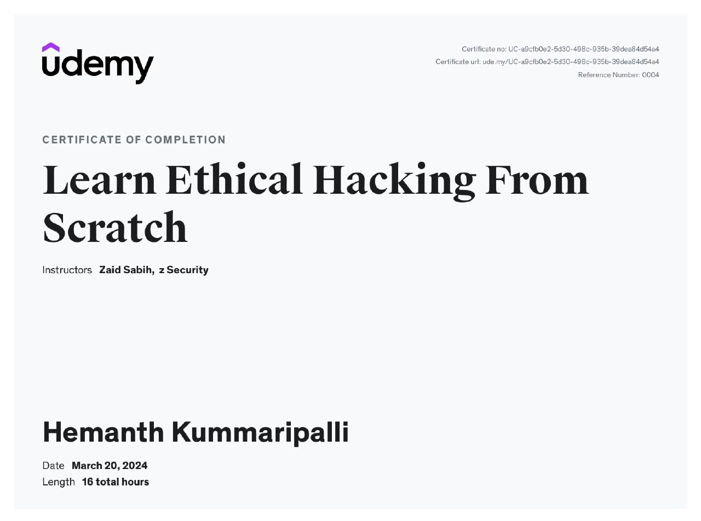
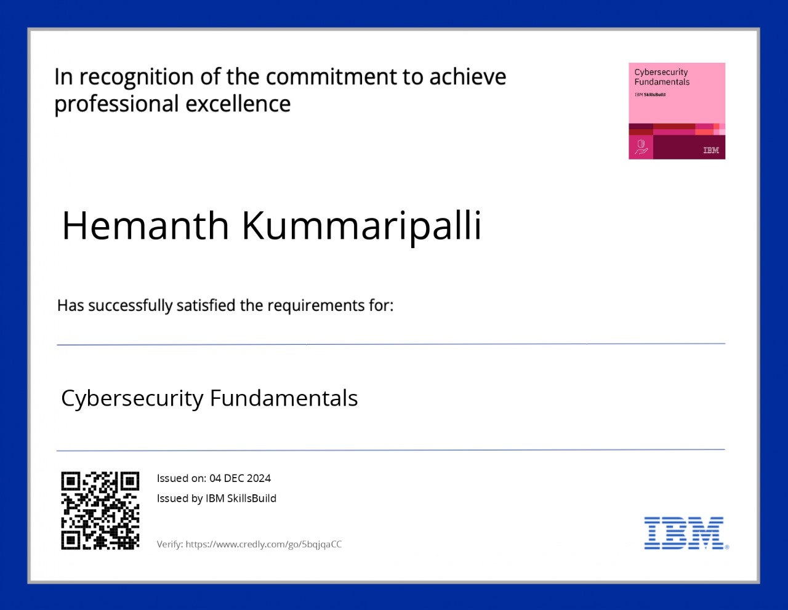
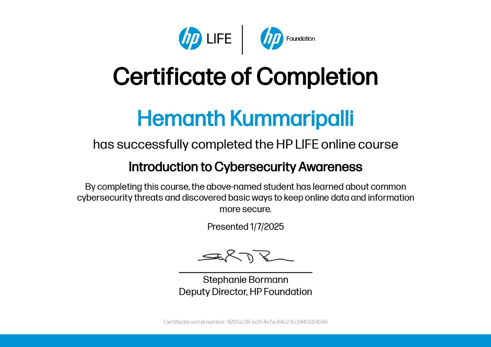
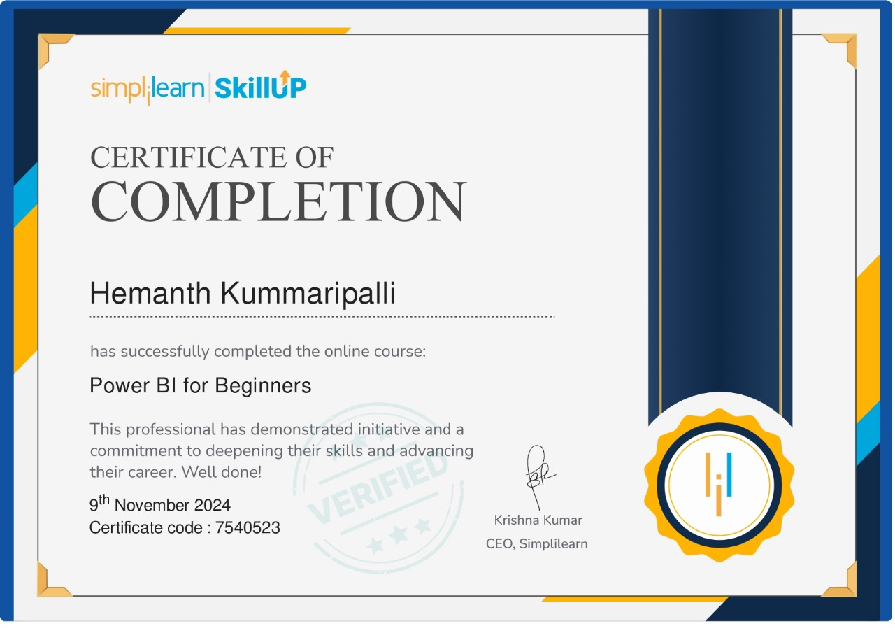
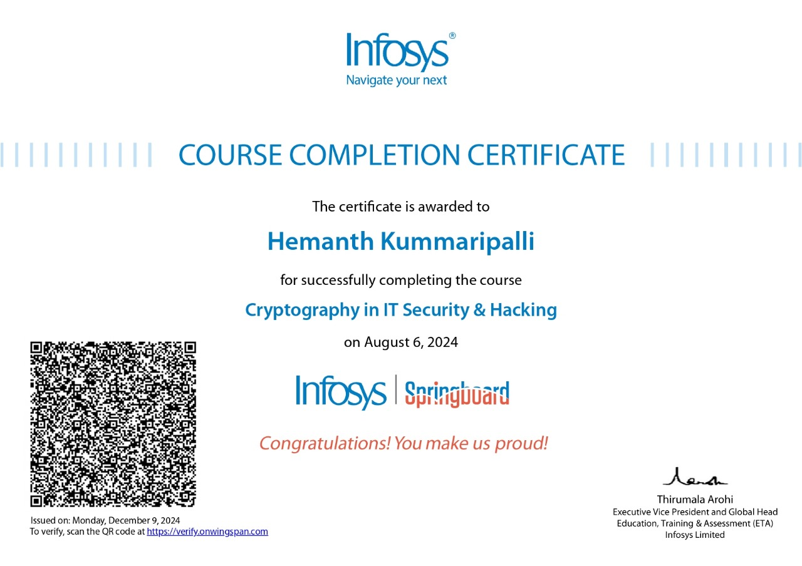
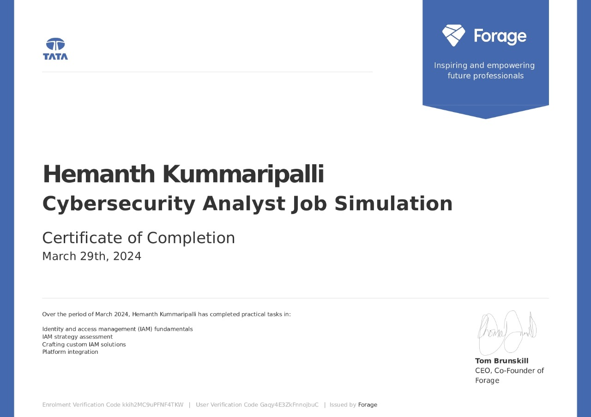

Certifications
- Completed the 'Learn Ethical Hacking from Scratch' course on Udemy, gaining a comprehensive understanding of ethical hacking and cybersecurity fundamentals. This certification covers various aspects of penetration testing, network security, and vulnerability assessment. The course provided hands-on experience with real-world hacking scenarios, tools, and techniques, enabling me to analyze, exploit, and secure systems effectively. This achievement has strengthened my knowledge of ethical hacking and prepared me to address modern cybersecurity challenges. 
- Earned a certification in Cybersecurity Fundamentals from IBM SkillsBuild, demonstrating a solid foundation in cybersecurity principles and practices.This course covered key topics such as threat identification, risk assessment, security controls, and incident response. Through practical learning and case studies, I gained valuable insights into securing networks, systems, and data against cyber threats. This certification has equipped me with essential skills to navigate and address cybersecurity challenges in today's digital landscape. 
- Successfully completed the 'Programming with Python 3.x' course from Simplilearn, acquiring in-depth knowledge of Python programming concepts and practices. The course covered essential topics such as data types, control structures, functions, object-oriented programming, file handling, and libraries like NumPy and Pandas. It also included practical projects and exercises to build real-world applications. This certification has enhanced my programming skills and prepared me to solve complex problems efficiently using Python.
- Completed the 'Introduction to Cybersecurity Awareness' course from HP LIFE, gaining a strong understanding of fundamental cybersecurity concepts and best practices. This course focused on recognizing common cyber threats, protecting personal and professional data, and implementing basic security measures to safeguard systems and networks. It emphasized the importance of cybersecurity in today's digital world and provided practical strategies to enhance security awareness. This certification has strengthened my ability to identify and mitigate potential security risks effectively. 
- Successfully completed the 'Power BI for Beginners' course from Simplilearn, gaining foundational knowledge of data visualization and business intelligence using Power BI. The course covered key topics such as data transformation, creating interactive dashboards, and generating meaningful insights from datasets. Hands-on projects and practical exercises provided experience in connecting data sources, building reports, and sharing analytics. This certification has equipped me with essential skills to analyze and present data effectively using Power BI tool. 
- Completed the 'Cryptography in IT Security & Hacking' course on Infosys Springboard, gaining a solid understanding of cryptographic principles and their role in securing IT systems. The course covered essential topics such as encryption, decryption, symmetric and asymmetric key algorithms, hashing, and digital signatures. It also provided insights into how cryptography is applied in ethical hacking to secure data and prevent cyber threats. This certification has enhanced my knowledge of cryptographic techniques and their importance in IT security. 
- Successfully completed the Cybersecurity Analyst Job Simulation offered by Tata through Forage. This program provided a practical, hands-on experience simulating real-world tasks performed by cybersecurity analysts. It included activities such as threat detection, risk assessment, incident response, and vulnerability management. The simulation enhanced my ability to analyze and mitigate cybersecurity threats, strengthened my problem-solving skills, and provided valuable insights into the responsibilities and workflows of a cybersecurity analyst in a professional setting. 